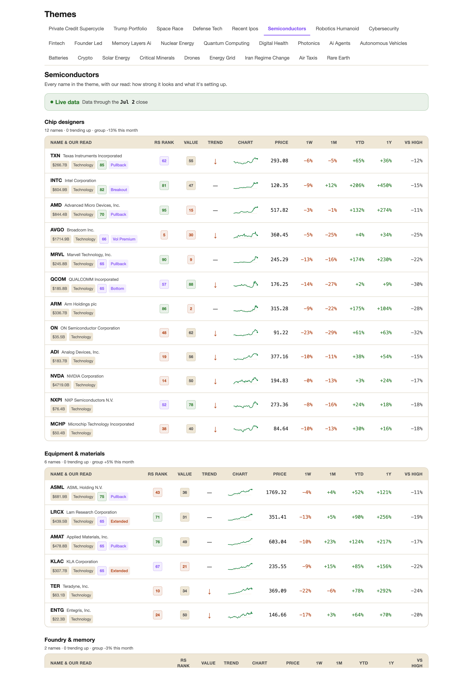
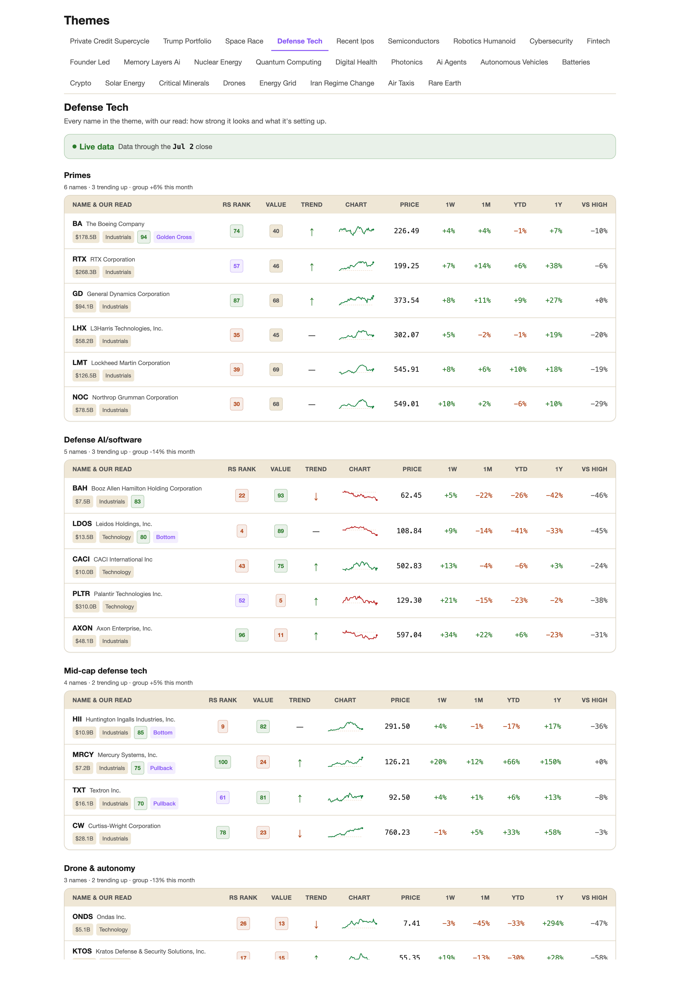

Le post explique factuellement une rotation réelle vue dans ton app : sur la dernière semaine, tout le complexe AI-hardware est rouge pendant que la défense est verte. Deux vraies captures de ton dashboard (générées, en bas de page). 2 angles au choix.
Factuel : la colonne 1W rouge des semis vs la colonne 1W verte de la défense. Deux vraies captures, le contraste raconte la rotation.
A: Over the last week the whole semis basket went red while defense went green. Reading the rotation by theme.
B: Two baskets, opposite tape, same week: semis all red, defense all green.
C: AI hardware rolled over as a group this week while defense caught a bid. The read, by theme.
I group the whole US market into narrative baskets and read it by story instead of by index. Over the last week the split got clean.
Here is the semiconductors basket. Look at the 1-week column, every single name red, from NVDA and AMD to the equipment makers like ASML and LRCX. One chart rolling over is noise. The whole group coming in together is a rotation.
[ SCREENSHOT 1 ]
Now the defense basket, same screen, same week. The 1-week column is green top to bottom, the primes leading, Boeing, RTX, GD, Lockheed and Northrop all bid.
[ SCREENSHOT 2 ]
Two baskets, opposite tape, the same five days. Money is walking out of the high-beta AI-hardware story and into defense. You would barely catch it at the index level, because tech holds the leaders and the laggards at once and they offset. Grouping by story is the only place the rotation shows up this cleanly.
What I do with it as a swing trader. The AI-hardware names are stretched to the downside, so I build a support watchlist for when the selling slows, and I stay out while it is still in free fall. Defense leading a down week for tech is a relative-strength tell I flag, whether it keeps leading or just defends.
One honest line. This is one week. It shows where the money is going. The follow-through is what I trade. The first red week is information.
Are you buying the AI-hardware flush, or respecting the rotation into defense?
Pour aller vite. Une seule capture (les semis), la lecture, la question.
The semiconductors basket went red across the board this week. The rotation, by theme.
I read the market by narrative basket. Here is the semiconductors basket, and the 1-week column tells it: every name red, from NVDA and AMD down through the equipment makers.
[ SCREENSHOT 1 ]
The whole AI-hardware group came in together, which is what a rotation looks like. The same week, defense rose across the board. The index hides it because tech holds both sides and they offset. Swing read: the AI-hardware names are stretched to the downside, so I build a support watchlist for when the selling slows, and I flag defense for its relative strength. One week is information. The follow-through is the trade.
Buying the flush, or respecting the rotation?
Honnête, assume l'IA, propose le lien sans forcer. À coller en commentaire, seulement si on te le demande.
That is my own app, The Philosopher Investor. I built it to group the whole US market into themed baskets and rank what is moving, then drill into any basket to see every name with its relative strength, its setup, and its move over the week and month. It is AI plus a human pass, the engine sorts and scores, then I go over it and cut the noise. Happy to drop a link if it is useful, but the read above stands on its own.
app.thephilosopherinvestor.com dans un commentaire de réponse. Jamais dans le post d'origine.Règles. Lis les rules du sub avant (self-promo, flair, effort minimum). Une analyse chiffrée passe ; les captures de-brandées évitent le flag « no promotion ».
Timing. Soir ET en semaine, ou dimanche soir pour une revue. Pas en plein milieu de séance.
Zéro lien dans le post. Le lien va seulement en commentaire, et seulement si on te le demande.
Engage. Réponds à chaque commentaire le jour même, avec de la substance. C'est ce qui fait monter le post et c'est là que la découverte se fait.
Data. Chiffres frais qui matchent les captures. Un chiffre faux repéré et c'est fini.
Vraies pages de ton app (Semiconductors et Defense Tech), de-brandées. Clic droit → Enregistrer l'image, ou glisse-les directement dans Reddit aux marqueurs.


/zinsser pour l'audit anti-IA final. r/swingtrading = vrais traders, la passe stricte vaut le coup.